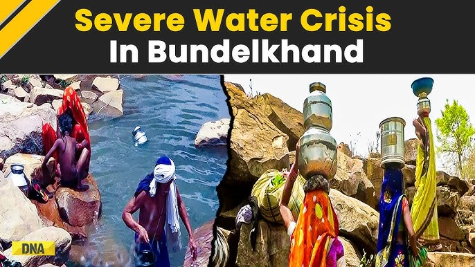

Welcome to Water Scarcity Wiki
Explore detailed resources and techniques on how to manage water scarcity, one of the most pressing challenges of our time.
Bundelkhand water Problem
Bundelkhand faces severe water problems due to its arid climate, erratic rainfall, and groundwater
depletion.
The region struggles with acute water scarcity, affecting agriculture and daily life.
Groundwater levels are rapidly declining due to over-extraction, and surface water resources are
limited.
Efforts to address these issues include rainwater harvesting, soil and water conservation
techniques, and promoting water-efficient agricultural practices.
However, long-term solutions
require comprehensive water management strategies and community involvement to ensure sustainable water
availability in Bundelkhand.
Water-efficient techniques help in reducing water consumption and improving sustainabilit
Water-efficient techniques help reduce water consumption and promote sustainability by optimizing water
use in agriculture, industry, and households.
Methods like drip irrigation, rainwater harvesting,
and greywater recycling minimize waste and preserve water resources. Using low-flow fixtures, soil
moisture sensors, and drought-resistant plants further conserves water, ensuring efficient use.
These techniques are essential for maintaining water availability, especially in areas facing water
scarcity, while supporting environmental sustainability.
Latest Articles
Browse the most recent articles covering innovative water conservation methods and sustainable practices.